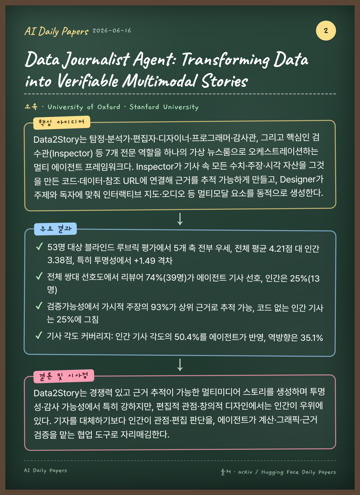
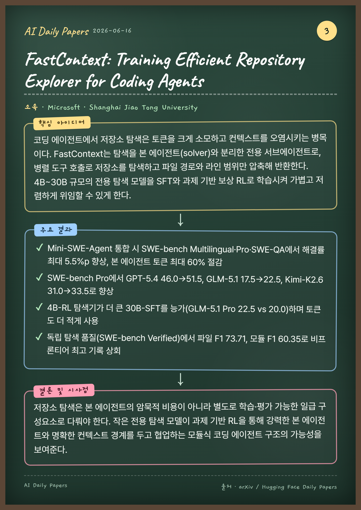
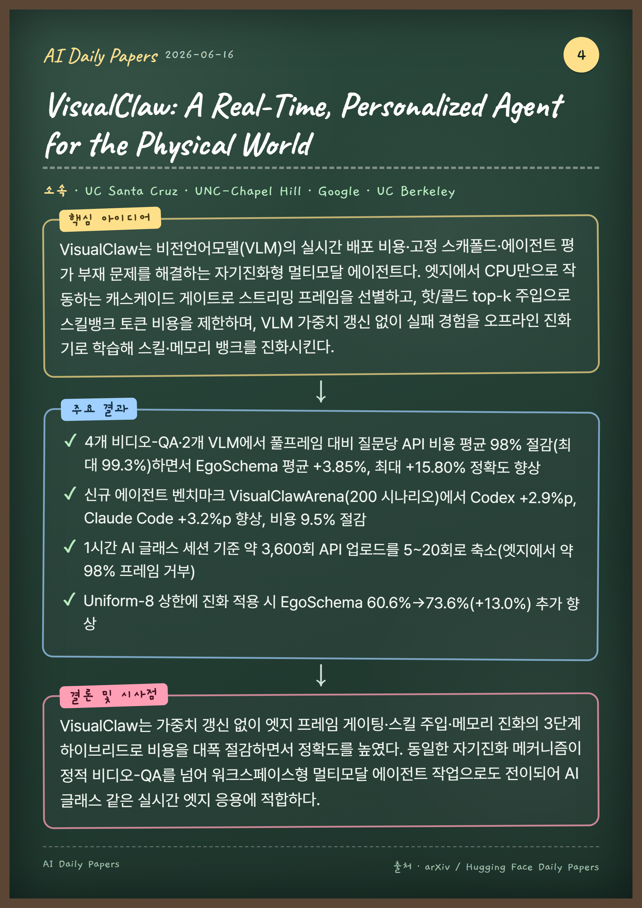
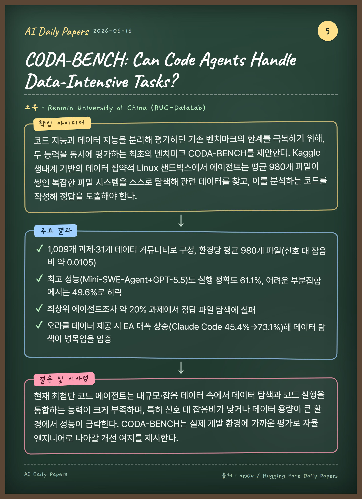
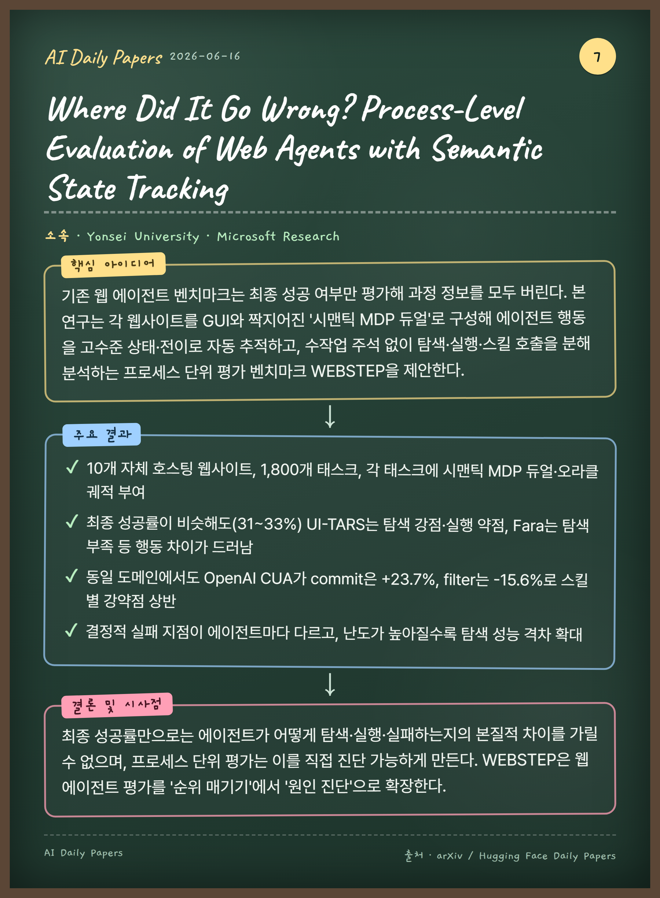
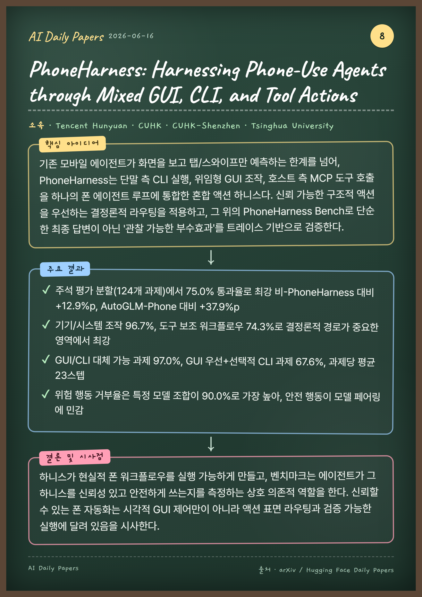
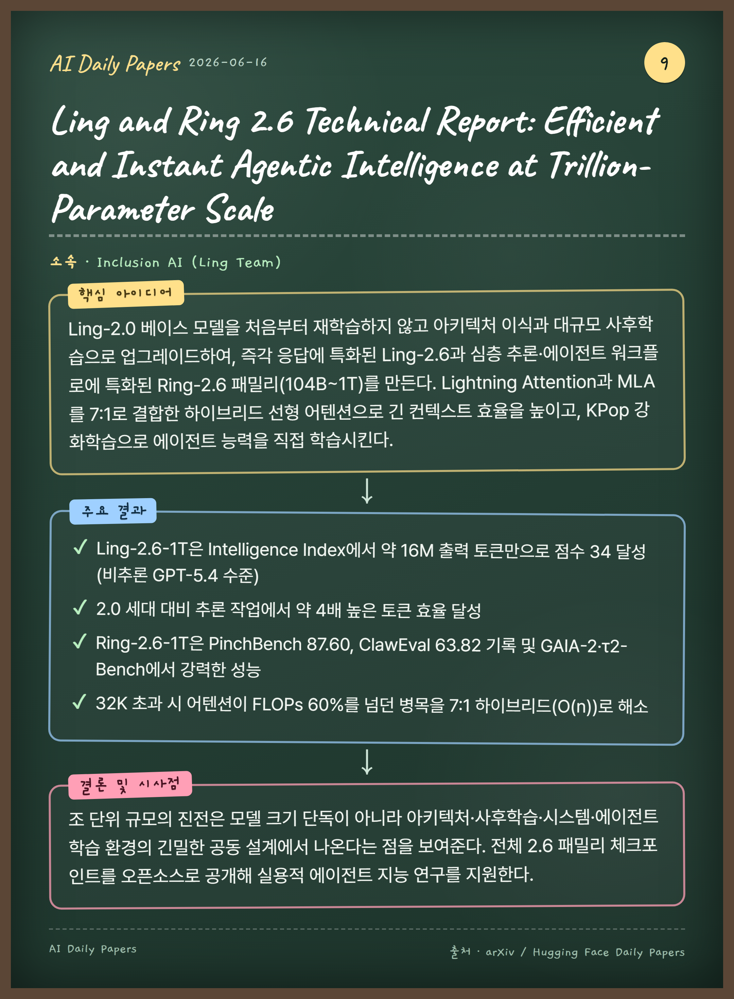
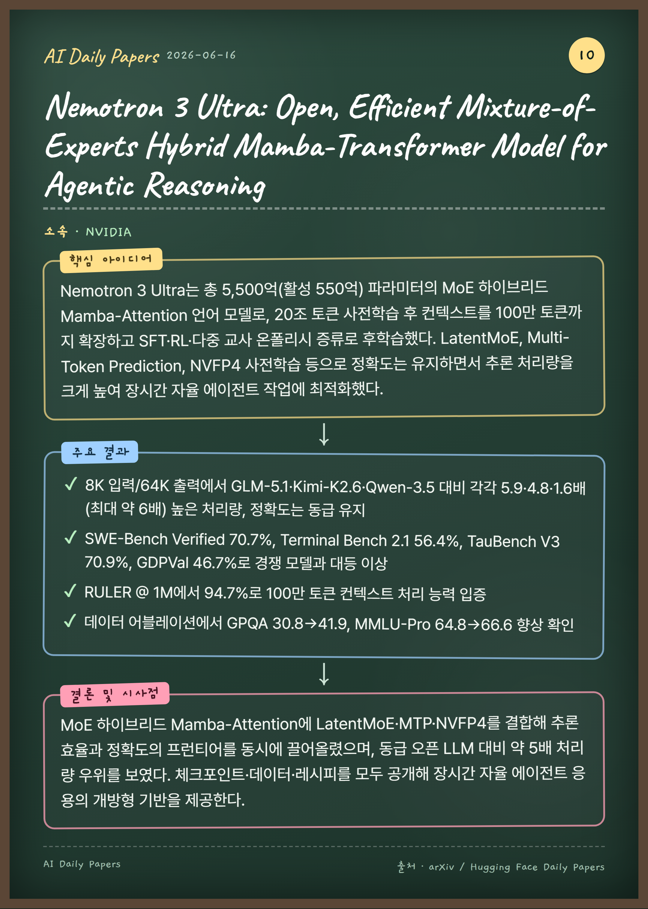
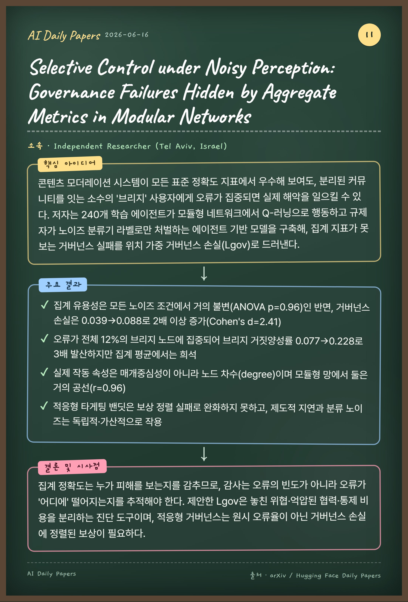

기존 대형 모델이 사용자가 물을 때만 답하는 '턴 기반' 방식인 데 반해, 매초 영상 스트림을 지켜보며 응답할지·침묵할지·백그라운드 모델에 위임할지를 스스로 결정하는 8B 규모의 비전 우선 상호작용 모델이다. '언제 행동할지'를 학습된 매초 단위 결정으로 만들고, 침묵을 일급 행동으로 취급해 능동성과 시간 인식을 갖춘다. 모델과 함께 ASR/TTS·메모리·백그라운드 브레인이 결합된 완전 배포형 시스템 전체를 오픈소스로 공개한다.
주요 결과
6개 실세계 스트리밍 시나리오 인간 평가에서 Doubao 대비 77.6%, Gemini 대비 87.9% 승률(각각 패배율 5.2%, 1.7%)로 압도적 선호
모니터링·경보 시나리오는 두 제품 상대로 100% 승리, 실시간 번역·카운팅에서는 패배 0건
AdaCodec으로 예측 가능 프레임을 약 16토큰(약 16배 절감)으로 인코딩, 2시간 이상 연속 영상을 1초 이내 지연으로 처리
400만 개 이상의 시간 정렬 스트리밍 클립으로 학습, 화면 쇼핑 안내·슬라이드 즉흥 강의 등 학습하지 않은 능력 창발
결론 및 시사점
비전 구동 상호작용 모델, 학습 레시피, 데이터, 완전 배포형 시스템을 처음으로 함께 오픈소스 공개해 턴 기반 대화를 넘어 실시간 스트리밍 상호작용으로의 전환을 제시한다. 컴팩트한 8B 모델이 위임을 통해 더 큰 모델의 추론력에 접근함으로써 거대 제품을 능가할 수 있음을 보였다.
Data Journalist Agent: Transforming Data into Verifiable Multimodal Stories

🏛 University of Oxford, Stanford University
핵심 아이디어
Data2Story는 탐정·분석가·편집자·디자이너·프로그래머·감사관, 그리고 핵심인 검수관(Inspector) 등 7개 전문 역할을 하나의 가상 뉴스룸으로 오케스트레이션하는 멀티 에이전트 프레임워크다. Inspector가 기사 속 모든 수치·주장·시각 자산을 그것을 만든 코드·데이터·참조 URL에 연결해 근거를 추적 가능하게 만들고, Designer가 주제와 독자에 맞춰 인터랙티브 지도·오디오 등 멀티모달 요소를 동적으로 생성한다.
주요 결과
53명 대상 블라인드 루브릭 평가에서 5개 축 전부 우세, 전체 평균 4.21점 대 인간 3.38점, 특히 투명성에서 +1.49 격차
전체 쌍대 선호도에서 리뷰어 74%(39명)가 에이전트 기사 선호, 인간은 25%(13명)
검증가능성에서 가시적 주장의 93%가 상위 근거로 추적 가능, 코드 없는 인간 기사는 25%에 그침
기사 각도 커버리지: 인간 기사 각도의 50.4%를 에이전트가 반영, 역방향은 35.1%
결론 및 시사점
Data2Story는 경쟁력 있고 근거 추적이 가능한 멀티미디어 스토리를 생성하며 투명성·감사 가능성에서 특히 강하지만, 편집적 관점·창의적 디자인에서는 인간이 우위에 있다. 기자를 대체하기보다 인간이 관점·편집 판단을, 에이전트가 계산·그래픽·근거 검증을 맡는 협업 도구로 자리매김한다.
FastContext: Training Efficient Repository Explorer for Coding Agents

🏛 Microsoft, Shanghai Jiao Tong University
핵심 아이디어
코딩 에이전트에서 저장소 탐색은 토큰을 크게 소모하고 컨텍스트를 오염시키는 병목이다. FastContext는 탐색을 본 에이전트(solver)와 분리한 전용 서브에이전트로, 병렬 도구 호출로 저장소를 탐색하고 파일 경로와 라인 범위만 압축해 반환한다. 4B~30B 규모의 전용 탐색 모델을 SFT와 과제 기반 보상 RL로 학습시켜 가볍고 저렴하게 위임할 수 있게 한다.
주요 결과
Mini-SWE-Agent 통합 시 SWE-bench Multilingual·Pro·SWE-QA에서 해결률 최대 5.5%p 향상, 본 에이전트 토큰 최대 60% 절감
VisualClaw: A Real-Time, Personalized Agent for the Physical World

🏛 UC Santa Cruz, UNC-Chapel Hill, Google, UC Berkeley
핵심 아이디어
VisualClaw는 비전언어모델(VLM)의 실시간 배포 비용·고정 스캐폴드·에이전트 평가 부재 문제를 해결하는 자기진화형 멀티모달 에이전트다. 엣지에서 CPU만으로 작동하는 캐스케이드 게이트로 스트리밍 프레임을 선별하고, 핫/콜드 top-k 주입으로 스킬뱅크 토큰 비용을 제한하며, VLM 가중치 갱신 없이 실패 경험을 오프라인 진화기로 학습해 스킬·메모리 뱅크를 진화시킨다.
주요 결과
4개 비디오-QA·2개 VLM에서 풀프레임 대비 질문당 API 비용 평균 98% 절감(최대 99.3%)하면서 EgoSchema 평균 +3.85%, 최대 +15.80% 정확도 향상
신규 에이전트 벤치마크 VisualClawArena(200 시나리오)에서 Codex +2.9%p, Claude Code +3.2%p 향상, 비용 9.5% 절감
1시간 AI 글래스 세션 기준 약 3,600회 API 업로드를 5~20회로 축소(엣지에서 약 98% 프레임 거부)
Uniform-8 상한에 진화 적용 시 EgoSchema 60.6%→73.6%(+13.0%) 추가 향상
결론 및 시사점
VisualClaw는 가중치 갱신 없이 엣지 프레임 게이팅·스킬 주입·메모리 진화의 3단계 하이브리드로 비용을 대폭 절감하면서 정확도를 높였다. 동일한 자기진화 메커니즘이 정적 비디오-QA를 넘어 워크스페이스형 멀티모달 에이전트 작업으로도 전이되어 AI 글래스 같은 실시간 엣지 응용에 적합하다.
CODA-BENCH: Can Code Agents Handle Data-Intensive Tasks?

🏛 Renmin University of China (RUC-DataLab)
핵심 아이디어
코드 지능과 데이터 지능을 분리해 평가하던 기존 벤치마크의 한계를 극복하기 위해, 두 능력을 동시에 평가하는 최초의 벤치마크 CODA-BENCH를 제안한다. Kaggle 생태계 기반의 데이터 집약적 Linux 샌드박스에서 에이전트는 평균 980개 파일이 쌓인 복잡한 파일 시스템을 스스로 탐색해 관련 데이터를 찾고, 이를 분석하는 코드를 작성해 정답을 도출해야 한다.
주요 결과
1,009개 과제·31개 데이터 커뮤니티로 구성, 환경당 평균 980개 파일(신호 대 잡음비 약 0.0105)
최고 성능(Mini-SWE-Agent+GPT-5.5)도 실행 정확도 61.1%, 어려운 부분집합에서는 49.6%로 하락
최상위 에이전트조차 약 20% 과제에서 정답 파일 탐색에 실패
오라클 데이터 제공 시 EA 대폭 상승(Claude Code 45.4%→73.1%)해 데이터 탐색이 병목임을 입증
결론 및 시사점
현재 최첨단 코드 에이전트는 대규모·잡음 데이터 속에서 데이터 탐색과 코드 실행을 통합하는 능력이 크게 부족하며, 특히 신호 대 잡음비가 낮거나 데이터 용량이 큰 환경에서 성능이 급락한다. CODA-BENCH는 실제 개발 환경에 가까운 평가로 자율 엔지니어로 나아갈 개선 여지를 제시한다.
장기 세션 LLM 에이전트에서 컨텍스트 누적은 추론 비용을 키우는데, 기존 가지치기 방식은 시퀀스 레이아웃을 변형해 프리픽스 불일치와 KV 캐시 무효화를 일으킨다. TokenPilot은 전역 단계의 Ingestion-Aware Compaction(변동 필드를 안정적 플레이스홀더로 고정)과 지역 단계의 Lifecycle-Aware Eviction(잔여 효용이 소진될 때만 보수적으로 제거)을 결합한 이중 단위 프레임워크다.
주요 결과
격리 모드 비용을 Vanilla $8.31→$3.22(약 61% 절감), Claw-Eval은 56% 절감하며 정확도 유지(81.0점)
연속 모드에서 비용을 61%, Claw-Eval은 87% 절감($81.52→$10.58)
프리픽스 안정화로 캐시 적중률이 38.7%→79.2%, 67.2%→83.1%로 상승
Ablation: 캐시 미스 토큰 5.943M→1.589M, 캐시 읽기 토큰 추가 65% 절감
결론 및 시사점
메모리 관리를 전역 압축과 지역 제거로 분리함으로써 텍스트 감축과 엄격한 프롬프트 캐시 정렬을 동시에 달성해, 작업 성능 저하 없이 추론 비용을 대폭 절감했다. 장기 에이전트 시스템을 위한 확장 가능하고 비용 효율적인 기반을 제공한다.
Where Did It Go Wrong? Process-Level Evaluation of Web Agents with Semantic State Tracking

🏛 Yonsei University, Microsoft Research
핵심 아이디어
기존 웹 에이전트 벤치마크는 최종 성공 여부만 평가해 과정 정보를 모두 버린다. 본 연구는 각 웹사이트를 GUI와 짝지어진 '시맨틱 MDP 듀얼'로 구성해 에이전트 행동을 고수준 상태·전이로 자동 추적하고, 수작업 주석 없이 탐색·실행·스킬 호출을 분해 분석하는 프로세스 단위 평가 벤치마크 WEBSTEP을 제안한다.
주요 결과
10개 자체 호스팅 웹사이트, 1,800개 태스크, 각 태스크에 시맨틱 MDP 듀얼·오라클 궤적 부여
최종 성공률이 비슷해도(31~33%) UI-TARS는 탐색 강점·실행 약점, Fara는 탐색 부족 등 행동 차이가 드러남
PhoneHarness: Harnessing Phone-Use Agents through Mixed GUI, CLI, and Tool Actions

🏛 Tencent Hunyuan, CUHK, CUHK-Shenzhen, Tsinghua University
핵심 아이디어
기존 모바일 에이전트가 화면을 보고 탭/스와이프만 예측하는 한계를 넘어, PhoneHarness는 단말 측 CLI 실행, 위임형 GUI 조작, 호스트 측 MCP 도구 호출을 하나의 폰 에이전트 루프에 통합한 혼합 액션 하니스다. 신뢰 가능한 구조적 액션을 우선하는 결정론적 라우팅을 적용하고, 그 위의 PhoneHarness Bench로 단순한 최종 답변이 아닌 '관찰 가능한 부수효과'를 트레이스 기반으로 검증한다.
주요 결과
주석 평가 분할(124개 과제)에서 75.0% 통과율로 최강 비-PhoneHarness 대비 +12.9%p, AutoGLM-Phone 대비 +37.9%p
기기/시스템 조작 96.7%, 도구 보조 워크플로우 74.3%로 결정론적 경로가 중요한 영역에서 최강
GUI/CLI 대체 가능 과제 97.0%, GUI 우선+선택적 CLI 과제 67.6%, 과제당 평균 23스텝
위험 행동 거부율은 특정 모델 조합이 90.0%로 가장 높아, 안전 행동이 모델 페어링에 민감
결론 및 시사점
하니스가 현실적 폰 워크플로우를 실행 가능하게 만들고, 벤치마크는 에이전트가 그 하니스를 신뢰성 있고 안전하게 쓰는지를 측정하는 상호 의존적 역할을 한다. 신뢰할 수 있는 폰 자동화는 시각적 GUI 제어만이 아니라 액션 표면 라우팅과 검증 가능한 실행에 달려 있음을 시사한다.
Ling and Ring 2.6 Technical Report: Efficient and Instant Agentic Intelligence at Trillion-Parameter Scale

🏛 Inclusion AI (Ling Team)
핵심 아이디어
Ling-2.0 베이스 모델을 처음부터 재학습하지 않고 아키텍처 이식과 대규모 사후학습으로 업그레이드하여, 즉각 응답에 특화된 Ling-2.6과 심층 추론·에이전트 워크플로에 특화된 Ring-2.6 패밀리(104B~1T)를 만든다. Lightning Attention과 MLA를 7:1로 결합한 하이브리드 선형 어텐션으로 긴 컨텍스트 효율을 높이고, KPop 강화학습으로 에이전트 능력을 직접 학습시킨다.
주요 결과
Ling-2.6-1T은 Intelligence Index에서 약 16M 출력 토큰만으로 점수 34 달성(비추론 GPT-5.4 수준)
2.0 세대 대비 추론 작업에서 약 4배 높은 토큰 효율 달성
Ring-2.6-1T은 PinchBench 87.60, ClawEval 63.82 기록 및 GAIA-2·τ2-Bench에서 강력한 성능
Nemotron 3 Ultra: Open, Efficient Mixture-of-Experts Hybrid Mamba-Transformer Model for Agentic Reasoning

🏛 NVIDIA
핵심 아이디어
Nemotron 3 Ultra는 총 5,500억(활성 550억) 파라미터의 MoE 하이브리드 Mamba-Attention 언어 모델로, 20조 토큰 사전학습 후 컨텍스트를 100만 토큰까지 확장하고 SFT·RL·다중 교사 온폴리시 증류로 후학습했다. LatentMoE, Multi-Token Prediction, NVFP4 사전학습 등으로 정확도는 유지하면서 추론 처리량을 크게 높여 장시간 자율 에이전트 작업에 최적화했다.
주요 결과
8K 입력/64K 출력에서 GLM-5.1·Kimi-K2.6·Qwen-3.5 대비 각각 5.9·4.8·1.6배(최대 약 6배) 높은 처리량, 정확도는 동급 유지
SWE-Bench Verified 70.7%, Terminal Bench 2.1 56.4%, TauBench V3 70.9%, GDPVal 46.7%로 경쟁 모델과 대등 이상
RULER @ 1M에서 94.7%로 100만 토큰 컨텍스트 처리 능력 입증
데이터 어블레이션에서 GPQA 30.8→41.9, MMLU-Pro 64.8→66.6 향상 확인
결론 및 시사점
MoE 하이브리드 Mamba-Attention에 LatentMoE·MTP·NVFP4를 결합해 추론 효율과 정확도의 프런티어를 동시에 끌어올렸으며, 동급 오픈 LLM 대비 약 5배 처리량 우위를 보였다. 체크포인트·데이터·레시피를 모두 공개해 장시간 자율 에이전트 응용의 개방형 기반을 제공한다.
Selective Control under Noisy Perception: Governance Failures Hidden by Aggregate Metrics in Modular Networks

🏛 Independent Researcher (Tel Aviv, Israel)
핵심 아이디어
콘텐츠 모더레이션 시스템이 모든 표준 정확도 지표에서 우수해 보여도, 분리된 커뮤니티를 잇는 소수의 '브리지' 사용자에게 오류가 집중되면 실제 해악을 일으킬 수 있다. 저자는 240개 학습 에이전트가 모듈형 네트워크에서 Q-러닝으로 행동하고 규제자가 노이즈 분류기 라벨로만 처벌하는 에이전트 기반 모델을 구축해, 집계 지표가 못 보는 거버넌스 실패를 위치 가중 거버넌스 손실(Lgov)로 드러낸다.
주요 결과
집계 유용성은 모든 노이즈 조건에서 거의 불변(ANOVA p=0.96)인 반면, 거버넌스 손실은 0.039→0.088로 2배 이상 증가(Cohen's d=2.41)
오류가 전체 12%의 브리지 노드에 집중되어 브리지 거짓양성률 0.077→0.228로 3배 발산하지만 집계 평균에서는 희석
실제 작동 속성은 매개중심성이 아니라 노드 차수(degree)이며 모듈형 망에서 둘은 거의 공선(r=0.96)
적응형 타게팅 밴딧은 보상 정렬 실패로 완화하지 못하고, 제도적 지연과 분류 노이즈는 독립적·가산적으로 작용
결론 및 시사점
집계 정확도는 누가 피해를 보는지를 감추므로, 감사는 오류의 빈도가 아니라 오류가 '어디에' 떨어지는지를 추적해야 한다. 제안한 Lgov은 놓친 위협·억압된 협력·통제 비용을 분리하는 진단 도구이며, 적응형 거버넌스는 원시 오류율이 아닌 거버넌스 손실에 정렬된 보상이 필요하다.